Generalizable detection
Detecting manipulated and AI-generated images and videos across unfamiliar generators, datasets and visual conditions.
POSTDOCTORAL RESEARCHER · CUHK-SHENZHEN
AI safety & multimedia forensics
I received my Ph.D. from the University of Chinese Academy of Sciences, with research conducted at the Institute of Automation, Chinese Academy of Sciences. Since March 2025, I have been a postdoctoral researcher at The Chinese University of Hong Kong, Shenzhen.
My research focuses on generalizable deepfake and AI-generated image detection, reliable multimedia forensics, and proactive media protection.
weinanguan@cuhk.edu.cn01 / RESEARCH
Detecting manipulated and AI-generated images and videos across unfamiliar generators, datasets and visual conditions.
Studying detection confidence, robust forgery representations and localization to make forensic evidence more dependable.
Protecting source media before manipulation through adversarial perturbations and visual reconstruction.
02 / PUBLICATIONS
Journal and conference papers and publicly released arXiv preprints, ordered by year. Click a title to read the paper, or an image to explore the figure.
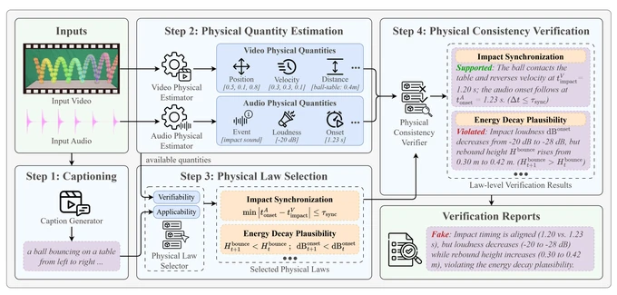
arXiv:2609.15562, 2026.
Verifies AI-generated audio-video through measurable physical quantities and consistency checks, with time-localized supporting evidence.
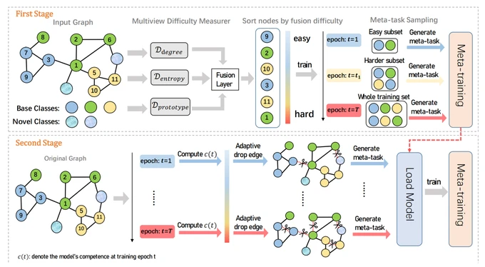
Information Sciences, 749: 123473, 2026.
An easy-to-hard curriculum and difficulty-aware task construction improve meta-learning for few-shot node classification.
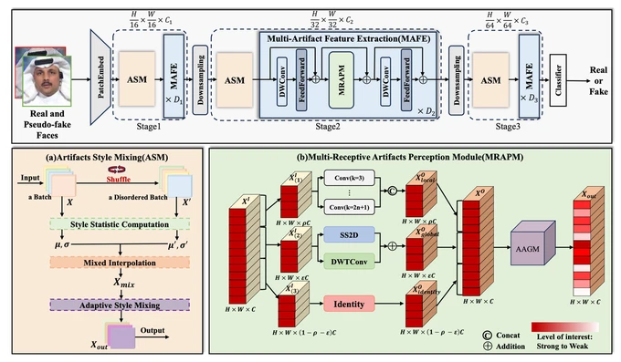
IEEE Transactions on Information Forensics and Security (TIFS), 21: 1184–1197, 2026.
Multi-artifact perception with a Mamba backbone learns complementary forgery cues for cross-dataset face forgery detection.
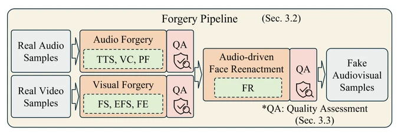
arXiv:2510.22622, 2025.
A unified multimodal deepfake benchmark combines diverse audio-video forgery pipelines, five datasets and eleven detectors.
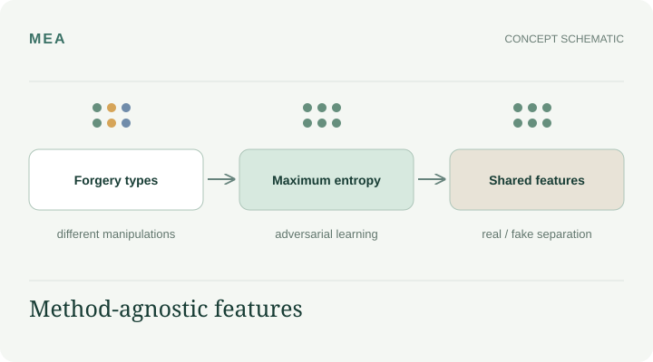
Chinese Conference on Pattern Recognition and Computer Vision (PRCV), pp. 298–312, 2025. · Proceedings published in 2026
Maximum-entropy adversarial learning encourages method-agnostic forgery features, supported by contrastive learning and feature augmentation.
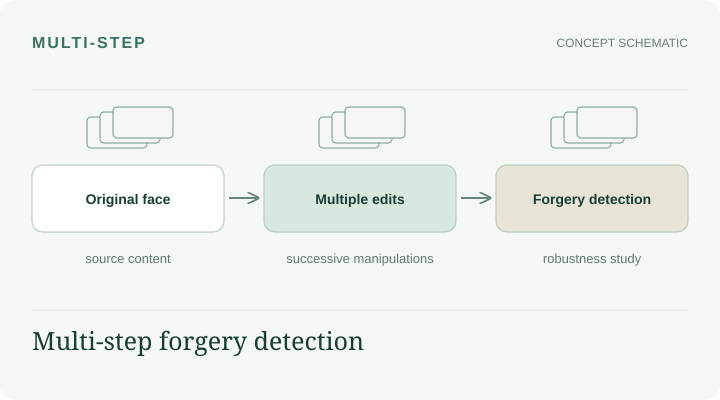
IEEE International Conference on Image Processing (ICIP), pp. 779–784, 2025.
Investigates the robustness of facial forgery detection when a face undergoes multiple manipulation steps.
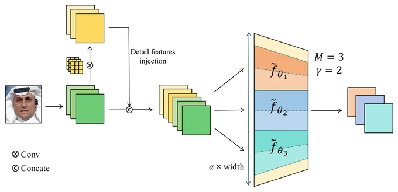
Visual Intelligence, 3: 28, 2025.
Studies uncertainty calibration and packed ensembles to make deepfake detection confidence more reliable on unfamiliar content.
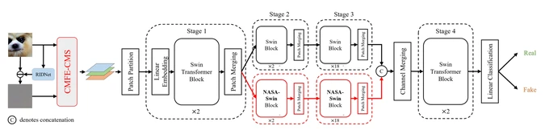
IEEE Transactions on Information Forensics and Security (TIFS), 20: 5256–5268, 2025.
Noise-aware attention combines image content and residual signals to detect diffusion-generated images beyond familiar generators.
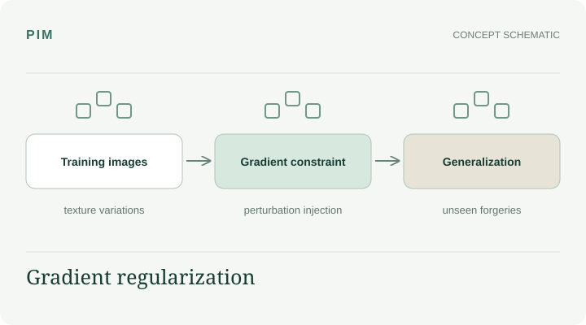
IEEE Transactions on Information Forensics and Security (TIFS), 19: 5345–5356, 2024.
Gradient regularization reduces sensitivity to forgery-specific textures; a perturbation injection module makes training practical.
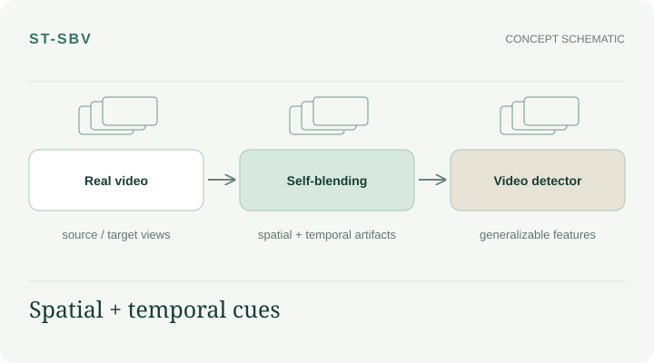
Chinese Conference on Pattern Recognition and Computer Vision (PRCV), pp. 274–288, 2024.
Self-blended videos simulate spatial and temporal forgery artifacts, providing training signals for unseen video manipulations.
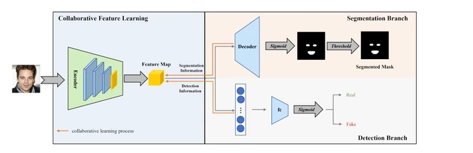
IEEE International Joint Conference on Biometrics (IJCB), 2022.
Jointly learns facial manipulation detection and pixel-level segmentation to identify both forged content and its location.
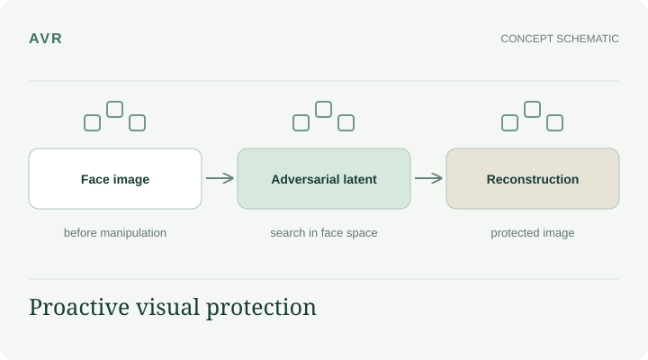
ACM International Conference on Multimedia (ACM MM), pp. 2464–2472, 2022.
Adversarial search in latent face space reconstructs visually faithful images designed to resist subsequent DeepFake manipulation.
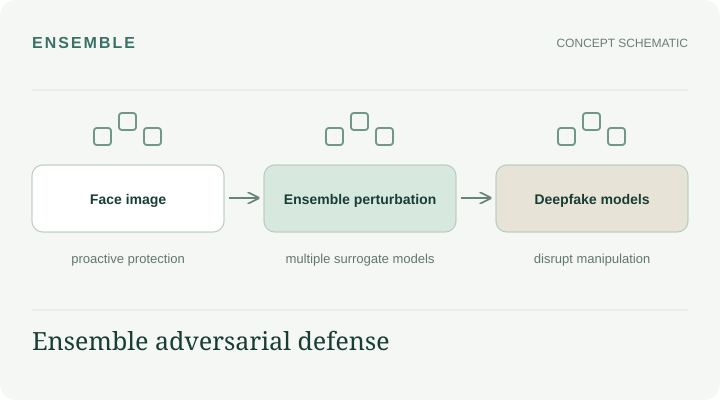
International Conference on Pattern Recognition (ICPR), pp. 1952–1958, 2022.
Ensemble adversarial perturbations protect source images against multiple facial manipulation models.
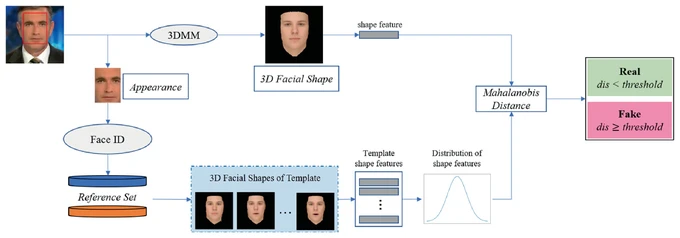
CAAI International Conference on Artificial Intelligence (CICAI), pp. 404–415, 2022.
Uses 3D facial shape information to authenticate face videos and detect identity inconsistencies introduced by face swapping.
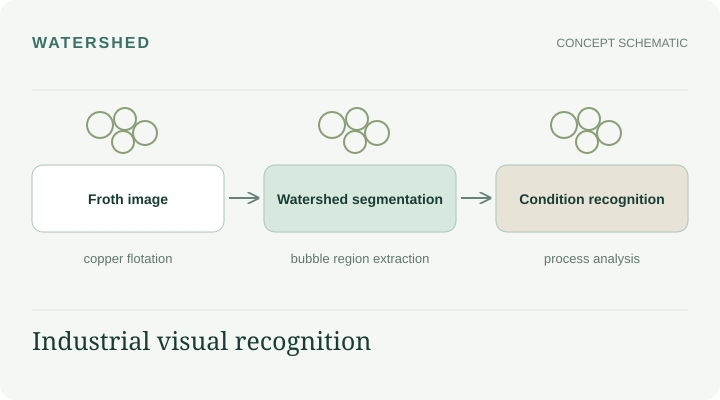
Chinese Automation Congress (CAC), pp. 224–231, 2019.
An improved watershed segmentation method supports visual recognition of copper flotation conditions.
No matching papers. Try another keyword or choose all years.
Images show paper frameworks or clearly labeled research schematics. Figure credits and paper links are available in the enlarged view. Conference papers are grouped by conference year.